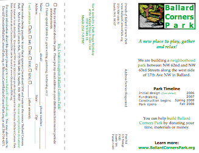

We’re hoping we’ll see a few new visitors at the website now that the new brochure has been posted to the neighbors and signs have gone up for our Public Design Workshop this Wednesday, 21st March 2007 at the Boys and Girls Club from 7-9 pm.
If you are a new visitor, then welcome to our little project.
If you want to find out more details about the park, the project and the fundraising, then it’s probably good to start at the About box and then head to the Timeline. After that feel free to browse and leave comments, come to our meetings and feel free to volunteer.
Although it’s been added elsewhere on the site here is the picture for the conceptual design:

and also a link to the brochure, which has some different text:

Click through on both to access the PDF files (which your browser will download and may display or save depending on your settings).
Posted on March 16th 2007 by gordon in Meetings,Misc. | Comments Off on Welcome New Visitors (Brochures and Design) |
This morning I saw a contractor at the old house on the south part of our park. I quizzed him and he said they were doing asbestos abatement (removing asbestos containing material). Apparently they were removing windows with glazing compound and linoleum tiles that have some asbestos in them, none of which was friable.
Posted on March 15th 2007 by David Folweiler in Misc. | Comments Off on Asbestos Abatement |
Olympia once more
I traveled to Olympia again last Thursday. I was there to support my profession, which believe it or not, is not co-chair of the Friends of Ballard Corners Park. On the side, in between Ballard Corners Park events, I help a few people as a chiropractor. And we had a wee bill (SSB5597) before the State Senate. The Senate was busy, busy, busy trying to pass a large number of bills in a short period of time. So when I wasn’t supporting the Washington State Chiropractic Association, I met briefly with Senator Jeanne Kohl-Welles. I am pleased to report that she supported both the chiropractic bill and funding for Ballard Corners Park.
It’s not too late to contact the state legislature!
For those of you who have emailed or called the legislature, thank you very much. We’re getting down to the wire now. The House of Representatives’ Capital Budget Committee, headed by Rep. Bill Fromhold is expected to release their budget next Monday or Tuesday. There is still time to let the legislature know how much you want their support. Last week Kelly Taylor called instead of emailing. She reported that everyone she talked to was very nice, as they have been to me. It only takes a few minutes. Please contact them. If you’ve done it once, do it again. They need to know how large the community support is for our project. (more…)
Posted on March 12th 2007 by David Folweiler in Events,Fundraising,Misc. | Comments Off on Grab Bag Update |
Lobbying is such a pejorative word. When we request funding from the legislature as citizens for a project for the public good, perhaps we should have a better verb. ‘Counsel’, ‘talk’, ‘request’…?

Mark Donovan, his young daughter Eva, and I went to Olympia on Thursday, 1 Mar, to meet with legislators and staff to ask for a Capital Budget Request for $125,000 for Ballard Corners Park. We met with Adam Aaseby, Senator Capital Budget staffer and Susan Howson, House Capital Budget staffer. Both asked questions and seem more familiar with the request. I also met with Rep. Joyce MacDonald and Rep. Bill Fromhold. I dropped material off and met with the staff of Rep. Dickerson, Rep. Sommers, Sen. Brandland, Sen. Zarelli, Sen. Jacobsen, and Rep. Newhouse. Rep. MacDonald told me that the House will be beginning their formulation of the Capital Budget this weekend.
I was nervous around people with such power. Mark was so calm; he seemed non-plussed by it all and was very sweet, offering to take greater care of his lovely daughter than other concerns. Eva is adorable and loved by all that met with her.
Nonetheless, I hope that the state legislature sees the wisdom of funding our park. Their stake would be less than a third of construction costs. The city and the county would pick up most of the rest. Corporate grants, neighborhood support, and sweat equity will make up the rest.
Posted on March 3rd 2007 by David Folweiler in Fundraising | Comments Off on Lobbying in Olympia |
I opened my email yesterday and was thrilled to see that Larry Phillips had sent emails to the state legislature on our behalf. I was thrilled and hadn’t expected it. Check it out:

Dear Senator Fraser and Representative Fromhold,
I urge your support for a capital budget request for $125,000 in state funding for Ballard Corners Park, the newest park in the Ballard neighborhood of Seattle.
Outside of downtown Seattle, the Ballard neighborhood has the smallest amount of open and green space in Seattle, and population density is increasing rapidly, so any green space we can preserve is needed. Ballard Corners Park is a rare opportunity to create a vibrant community gathering space where children can play, native plants can grow, and people of all ages can contemplate and enjoy nature.
For more information, please see:
· The project website: www.ballardcornerspark.org
· My letter of endorsement for the project:
http://ballardcornerspark.org/Documents/Phillips%20endorsement%20letter%20on%20letterhead.pdf
King County has been pleased to contribute funding for this worthy project, and I urge the state to do so as well. Thank you for your consideration.
Sincerely,
Larry Phillips, Councilmember
Metropolitan King County Council, District Four
King County Courthouse
516 Third Avenue, Room 1200
Seattle, WA 98104-3272
206.296.1004
larry.phillips@metrokc.gov
For more information: www.metrokc.gov/phillips
To sign up for my eNews: http://www.metrokc.gov/phillips/newsletters.htm
Posted on March 3rd 2007 by David Folweiler in Fundraising | Comments Off on King County Councilmember Larry Phillips lobbies on our behalf |
I tallied the results of the poll and sent the results to Ken Bounds, the outgoing Superintendent of Seattle Parks and Recreation. Here is my email to him followed by his response.
Superintendent Bounds,
I have asked our steering committee and community members (90+ people) and Groundswell NW’s email distribution list for suggestions about other names for Ballard Corners Park. Rebekah Schilperoort wrote an article for the Ballard News Tribune soliciting additional names.
I then asked our steering committee and community members to vote on their preferred name for the park. The results of the poll are:
Ballard Corners Park – 18 votes
Boutin Market Park – 5 votes
Polk Street Park – 2 votes
Post Street Park – 1 vote
Polk and Post Streets Park – 1 vote
Viking Park – 1 vote
Corner Store Park – 1 vote
Ballard Peace Park – 1 vote
Gunnar Guddal Park – 1 vote
It appears that there is strong support, by a substantial margin, to retain Ballard Corners Park as the name of Ballard’s newest park. (Please note the use of the plural on “Corners”.)
Thank you for the opportunity to involve the community in this process. Thank you also for your work as superintendent of the Department of Parks and Recreation.
David Folweiler, co-chair
Friends of Ballard Corners Park
 David,
David,
Thanks for taking on the task to reconsider the name. I accept the community’s conclusion. I’ll officially submit the papers to the City Clerk naming the park “Ballard Corners Park.” I know it will be a much loved park by the community, which is what really counts!
Ken
Ken Bounds, Superintendent
Seattle Parks and Recreation
Posted on February 27th 2007 by David Folweiler in Misc. | Comments Off on The Name is Official – It’s “Ballard Corners Park” |
OK, people, this is it! (Drum roll, please.)
I know that many of you expressed an opinion earlier, but I want your final vote on a name for Ballard Corners Park after having seen all the suggestions. Even if you replied earlier, please reply again.
To vote, just email with your favorite name. Entries are due by tomorrow evening (26 Feb at 6 PM), so I can forward the community’s preference onto Parks and Recreation Superintendent Ken Bounds before he retires on Wednesday.
By the way, the article in the Ballard News Tribune generated three calls and zero emails.
Ballard Corners Park
Our working name, emblazoned on hundreds of T-shirts, buttons, and websites.
Fisherman’s Haven or Fishermen’s Haven
Suggested by the elderly daughter of a Puget Sound Salmon fisherman.
Cedar Shake Park
William Boutin Park
Boutin Market Park
The last grocer on our North lot.
Polk Street Park
Polk and Post Streets Park
First and Polk Street Park
Post Street Park
Corner Post Park
Nods to Ballard’s old street names that surround the park.
Viking Park
Velkommen Park (may be misspelled, but “Welcome” in Norwegian)
Scandinavian Heritage Park
Lutefisk Park
All nods to the rich Scandinavian heritage in Ballard.
Ballard Beaver Park
Ballard Friendship Park
Ballard Peace Park
17th and 63rd Park
Community Corner Park
Bill Templeton Park
A deceased long time West Ballard little league coach.
Don’t forget! Please reply by tomorrow at 6 PM (Monday 26 Feb)! Feel free to forward to other Ballard residents! One vote for one name per person, please.
Posted on February 25th 2007 by David Folweiler in Misc. | Comments Off on Vote Now for a new Name for the Park! (Or keep the old) |
State Funding
We have requested $125,000 from the state legislature in the Capital Budget to help with our estimated $420,000 construction costs. We have $150,000 from the Pro-Parks Levy and $20,000 from King County (thanks, King County Councilmember Larry Phillips!) and we expect to receive $100,000 from the Department of Neighborhoods Large Projects Fund. But, we need additional funding to make Ballard Corners Park a reality.
I need all of you to email the following two state legislators who control the Capital Budget and let them know why Ballard Corners Park is important to you.
 State Senator Karen Fraser, Capital Budget Chair, Senate Ways and Means Committee
State Senator Karen Fraser, Capital Budget Chair, Senate Ways and Means Committee
Fraser.Karen@leg.wa.gov
http://www.leg.wa.gov/senate/fraser/
 State Representative Bill Fromhold, Chair, House of Representatives Capital Budget Committee
State Representative Bill Fromhold, Chair, House of Representatives Capital Budget Committee
http://www.leg.wa.gov/house/fromhold/
Fromhold.Bill@leg.wa.gov
A suggested message is:
“I am writing to urge your support for a Capital Budget request for $125,000 for Ballard Corners Park, Ballard’s newest park. Density in the Ballard neighborhood of Seattle is growing rapidly. Please support funding more open and green space in the great state of Washington’s urban neighborhoods.”
You can add reasons why you think Ballard Corners Park is important to you.
Posted on February 24th 2007 by David Folweiler in Fundraising | Comments Off on Please email the State Legislature! |
We met with John Barker tonight. Gabriella, Rebecca, Davidya, Phoebe, and Gordon were all there.
He showed us several examples of donor recognition items. We discussed bronze leaves, but ultimately we gravitated toward honoring Ballard’s past by selecting tiles that would mimic the old Ballard street names. We thought it would be lovely if we could use the design of the old blue and white tile signs that are embedded in the sidewalk throughout Ballard.
The tiles will be available for $100 each and can be strung together. They (most likely) will be placed on the backrest of the seatwall leading to the children’s play structure. For more information, plan to attend our design workshop 21 Mar 07, 7-9 PM at the Ballard Boys & Girls Club. All are welcome.
Posted on February 24th 2007 by David Folweiler in Meetings | Comments Off on Steering Committee Meeting & Donor Recognition Items |
Yes, that’s right, the fledgling wizard wants to help raise money for the Park.
Harry Potter and the Deathly Hallows is being released on July 21st 2007. As the last Harry Potter book it is a pre-order extravaganza and may be the best selling book this year.
If you live locally, remember to go to Fremont Place Books: any purchases and orders you place there will give a donation to the Park – just remember to declare Ballard Corners Park when you order.
But if Fremont Place Books isn’t local for you then use our Amazon shop to place your order and encourage your friends and relatives to order from Amazon using these links.
Here is a special order link that can be used to place the order directly on Amazon:
And there is also a Deluxe version of the book available.
Posted on February 21st 2007 by master in Fundraising | Comments Off on Harry Potter Supports Ballard Corners Park |
« Previous Page • Next Page »

{kind=link}